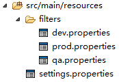

settings.properties是配置文件，我们把其中与环境相关的内容抽出来：
CMSDB_ENDPOINT=${CMSDB_ENDPOINT}
qa.properties是测试环境：
CMSDB_ENDPOINT=http://phx5qa01c-5fca.stratus.phx.qa.xx.com:8080/cms
dev.properties是开发环境：
CMSDB_ENDPOINT=http://localhost:8080/cms
prod.properties是生产环境：
CMSDB_ENDPOINT=http://cms.vip.stratus.xx.com/cms
目录上看起来是这样：

resources指定要替换的文件
activation指定替换的命令，如下例子中的配置mvn install -Denv=qa时采用
qa.properties中的值。
activeByDefault表示是否作为默认配置。如下面两个是等价的：
mvn install
mvn install -Denv=dev
<profiles> <profile> <id>dev</id> <build> <filters> <filter>src/main/resources/filters/dev.properties</filter> </filters> <resources> <resource><!-- 对指定目录下的内容进行占位符替换 --> <directory>src/main/resources</directory><!-- 指定目录 --> <filtering>true</filtering> <!-- 过滤 --> <includes> <include>*.*</include> <!-- 匹配文件 --> </includes> </resource> </resources> </build> <activation> <activeByDefault>true</activeByDefault> <!-- 默认 --> <property> <name>env</name> <!-- 触发的开关名 --> <value>dev</value> <!-- 触发的开关值 --> </property> </activation> </profile> <profile> <id>qa</id> <build> <filters> <filter>src/main/resources/filters/qa.properties</filter> </filters> <resources> <resource> <directory>src/main/resources</directory> <filtering>true</filtering> <includes> <!-- optional --> <include>*.*</include> </includes> </resource> </resources> </build> <activation> <property> <name>env</name> <value>qa</value> </property> </activation> </profile> <profile> <id>prod</id> <build> <filters> <filter>src/main/resources/filters/prod.properties</filter> </filters> <resources> <resource> <directory>src/main/resources</directory> <filtering>true</filtering> <includes> <!-- optional --> <include>*.*</include> </includes> </resource> </resources> </build> <activation> <property> <name>env</name> <value>prod</value> </property> </activation> </profile> </profiles>
mvn install mvn install -Denv=qa mvn install -Denv=prod